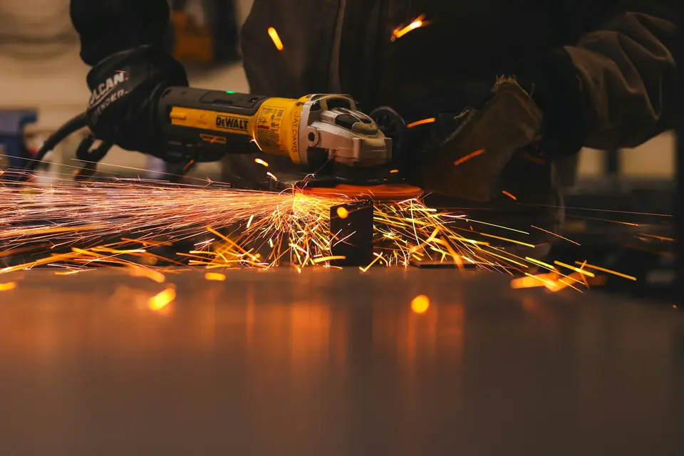
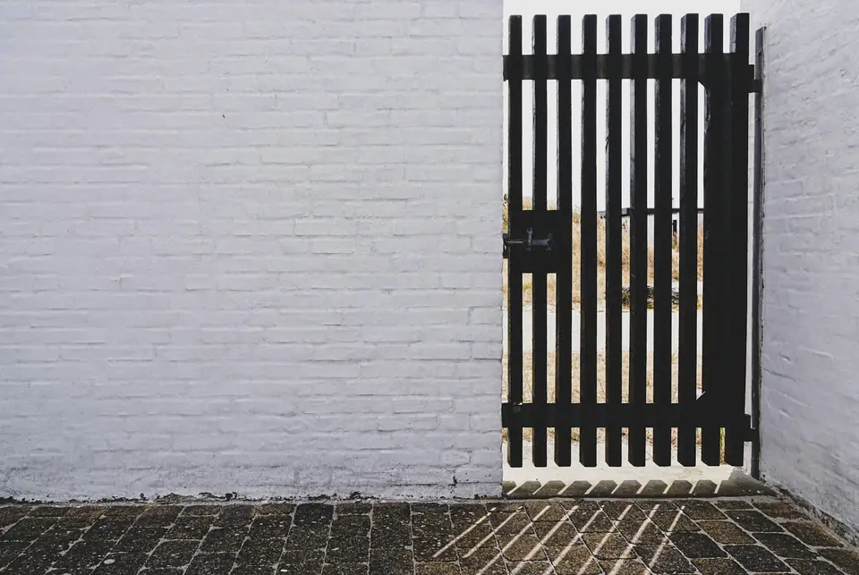
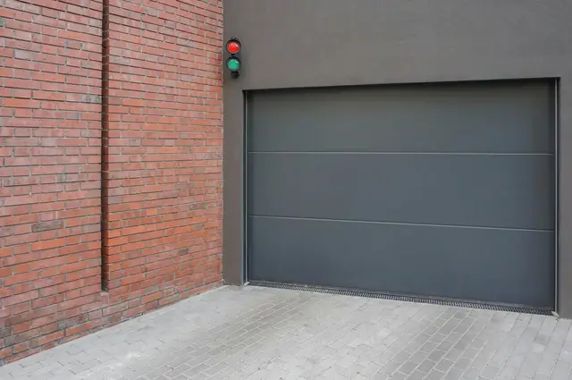
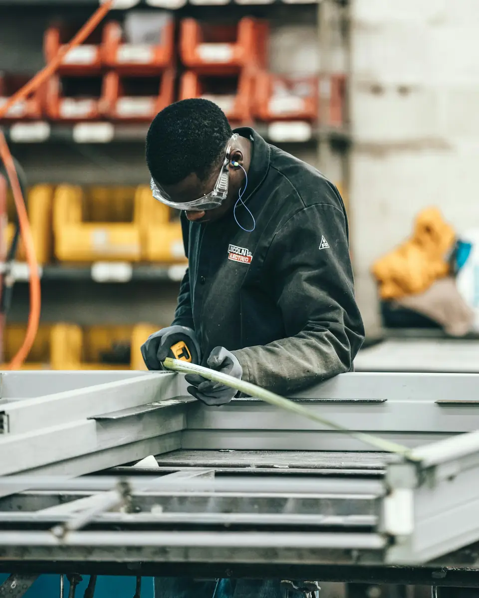
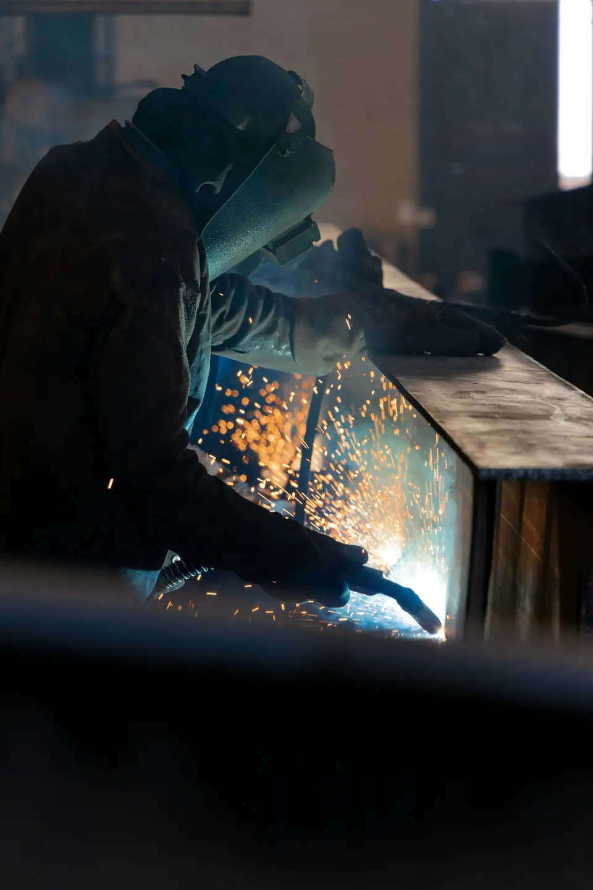

Precisa de um serralheiro em Franca?
Fabricamos e consertamos portões, grades e peças em ferro há 30 anos. Mande uma foto pelo WhatsApp: a gente vai até você, mede e passa o orçamento antes de começar.
- 4,9 no Google · 87 avaliações
- 30 anos em Franca
- Atendemos Franca e região
O que fazemos
Trabalhamos só com ferro, do conserto simples à peça feita sob medida.
Portões
Portão que abre leve e fecha seguro. Fabricação sob medida, conserto de portão basculante, troca de cabo de aço e ajuste de roldanas e trilhos.
Grades e corrimãos
Proteção para janelas, portas e vitrines de loja, e corrimãos firmes para escadas. Tudo medido no local.
Travas e fechaduras
Mais segurança sem trocar o portão: travas elétricas, eletromagnéticas e fechaduras tetra.
Consertos e manutenção
Solda, reforço e troca de peças em portões, grades e estruturas já instaladas. A manutenção preventiva evita o portão travar na hora errada.
Peças sob medida
Estruturas de mesa, lixeiras, playgrounds, janelas e o que o seu projeto pedir. Residencial, comercial e industrial.
Pintura de estruturas
Toda peça sai com pintura anticorrosiva. A pintura final, na cor que você escolher, é feita à parte.
Não achou o que precisa? Mande uma foto pelo WhatsApp (abre em nova aba) e a gente avalia.
Do primeiro contato ao serviço pronto
Você manda uma mensagem
Conte o que precisa e, se puder, mande uma foto. Já dá para ter uma ideia do serviço.
A gente vai até você
Combinamos o horário, chegamos nele e tiramos as medidas.
Você aprova o orçamento
Valor e prazo antes de começar. Nada de surpresa no final.
Serviço feito
Executamos com cuidado, entregamos funcionando e deixamos o local limpo.
Alguns trabalhos

Portão social 
Portão de garagem Grade Grade de segurança Solda e reparos
Mais trabalhos no nosso Instagram, @serralherialuccas (abre em nova aba).
O que dizem os clientes
4,9
87 avaliações no Google
“No mesmo dia tiraram as medidas, no outro finalizaram. Me passaram o orçamento pelo WhatsApp, o que agilizou o reparo.”
“Chegaram exatamente no horário combinado. Resolveram o problema do portão de forma rápida e eficiente.”
“Consertou meu portão basculante e resolveu definitivamente os problemas que este portão tinha.”
“O acabamento ficou impecável. Foi rápido, muito educado e cobrou um preço justo.”
“Veio muito rápido até em casa. Até o que não pedi, ele melhorou para mim.”

30anos em Franca
30 anos de ofício em Franca
A Serralheria Luccas trabalha com ferro há 30 anos em Franca. Começamos com consertos de bairro e hoje fazemos de portões e grades a peças sob medida para casas, comércios e indústrias.
O jeito de trabalhar continua o mesmo: atender bem, chegar no horário, cobrar o justo e só dar o serviço por terminado quando estiver bem feito.
Dicas para o seu portão durar mais
Pequenos cuidados evitam conserto grande. Se notar algum destes sinais, vale uma revisão.
Confira os cabos de aço
Cabo desfiado ou enferrujado é o principal motivo de acidentes com portão basculante. Se notar fios soltos, troque antes de romper.
Ruído e peso são aviso
Portão que começou a pesar ou a ranger costuma ter roldana gasta ou trilho desalinhado. Ajustar cedo sai mais barato que consertar depois.
Ferrugem se trata no começo
Pontos de ferrugem na base e nas soldas se espalham. Lixar e repintar com anticorrosivo prolonga muito a vida da peça.
Tem pets em casa?
Um portão ou uma grade de segurança na entrada evita fugas e acidentes.
Perguntas frequentes
Os produtos são feitos sob medida?
Sim. Medimos no local e fabricamos conforme o seu espaço.
Os produtos vêm com pintura final?
Saem com pintura anticorrosiva, que protege o ferro. A pintura final, na cor que você quiser, pode ser contratada à parte.
Quais materiais vocês usam?
Trabalhamos somente com ferro.
Vocês consertam peças já instaladas?
Sim: portões, grades e estruturas danificadas, além da manutenção preventiva.
Quanto tempo leva um serviço?
Depende do tamanho do trabalho. O prazo vem junto com o orçamento.
Atendem emergências ou fora do horário?
Em casos especiais, sim. Chame no WhatsApp para confirmar a disponibilidade e os custos.
Atendem comércios e indústrias?
Sim. Atendemos residências, comércios e indústrias.
Atendem fora de Franca?
Sim, atendemos as cidades da região. Para locais mais distantes, consulte: dá para combinar.
Quais as formas de pagamento?
Dinheiro, cartão de crédito e débito, transferência e Pix. Conforme o valor, parcelamos.

Conte o que você precisa
Mande uma mensagem com uma foto do portão, da grade ou da peça. A gente responde e combina a visita.
ou ligue: (16) 99967-6332